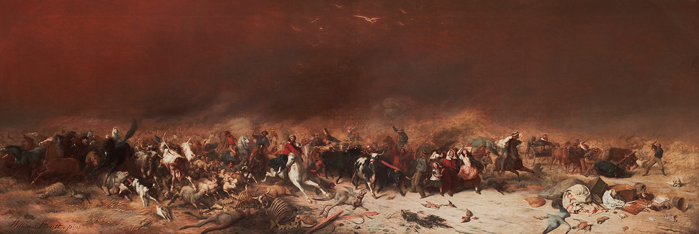
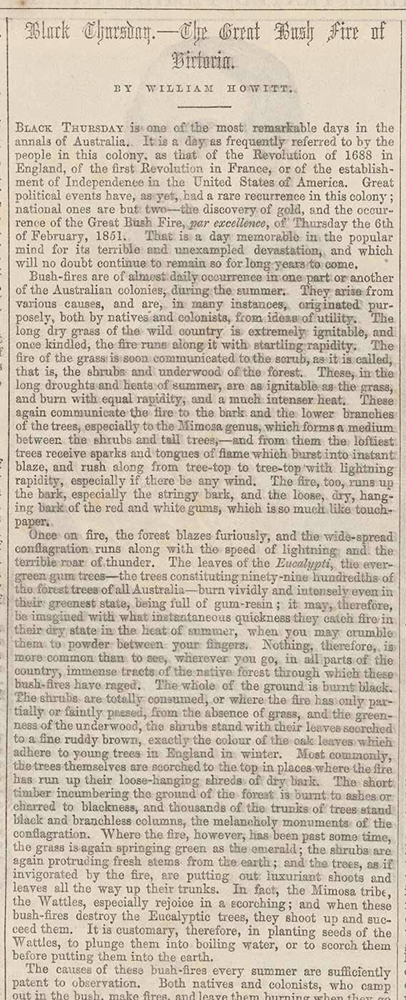
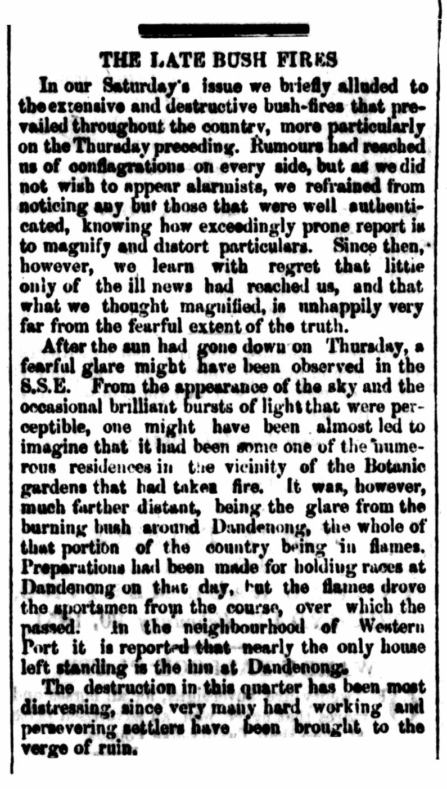

Prelude to the Victorian bushfires
"The fire kept enlarging its orbit, rolling about like some huge monster, destroying everything it touched, its track marked by charred timber, embers and ashes, cries and lamentations. Not content with dashing along the ground , it ran up the highest trees and the flames leaped in monkey fashion from tree to tree."
Permanent European settlement in Victoria began at Portland in 1834, and at Melbourne in 1835.
In February 1851, only a few months before the area achieved its status as a colony independent of New South Wales, the settlers confronted their first cataclysmic bushfires.
The fires followed a period of unusual and erratic weather. 1848 had seen heavy rainfall, followed by drought.
Then high temperatures in the summer of 1848–49 led to significant bushfire risk. The following winter Europeans saw snow for the first time in Melbourne, followed by deluges and floods.
High rainfall in 1849 encouraged the build-up of vegetation throughout the colony, only for further drought in 1850 to dry it out.
The following summer of 1851 was long and hot. For weeks before Black Thursday, bushfires raged uncontrolled in the Plenty Ranges, north-east of Melbourne.
There were also fires on Mount Macedon to the north and in the Pyrenees to the west. A newspaper proposed a ban on smoking on the road to Sydney, to minimise the risk of starting new fires.

Extract from William Howitt
‘Black Thursday — the great bush fire of Victoria’
Cassell’s Illustrated Family Paper, 4 February 1854
National Library of Australia

Extract from The Argus (Melbourne)
10 February 1851
National Library of Australia
Black Thursday, February 6th, 1851
William Strutt, 1864
oil on canvas, 107 x 343 cm
State Library of Victoria
❮
❯

{kind=link}
{kind=link}
{kind=link}